12 construções com silhuetas próprias e piso da cidade em cache. Capturas reais do Godot 4.6.3, incluindo HUD e minimapa. A arquitetura do castelo e os interiores existentes foram preservados.
12 fundações renderizadas tocam o chão (tolerância de 3 pixels); recortes sem corte de chaminés e torres. Arte original aguardando avaliação visual do Diretor.
960×540, Mesa llvmpipe por software; 160 quadros por ponto após 40 de aquecimento. Cena ativa, sem congelar atores. Desempenho físico Android ainda não medido.
| Local | Chamadas | Mediana por quadro | Redução |
|---|---|---|---|
| Praça | 24910 → 308 | 189.4 → 19.2 ms | 89.9% |
| Residencial | 24583 → 248 | 164.1 → 19.2 ms | 88.3% |
| Castelo | 24761 → 362 | 176.9 → 23.1 ms | 86.9% |
Antes — JSON bruto · Depois — JSON bruto · Implementação e validação
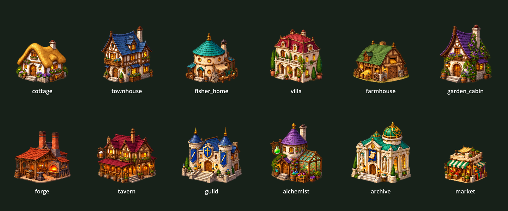
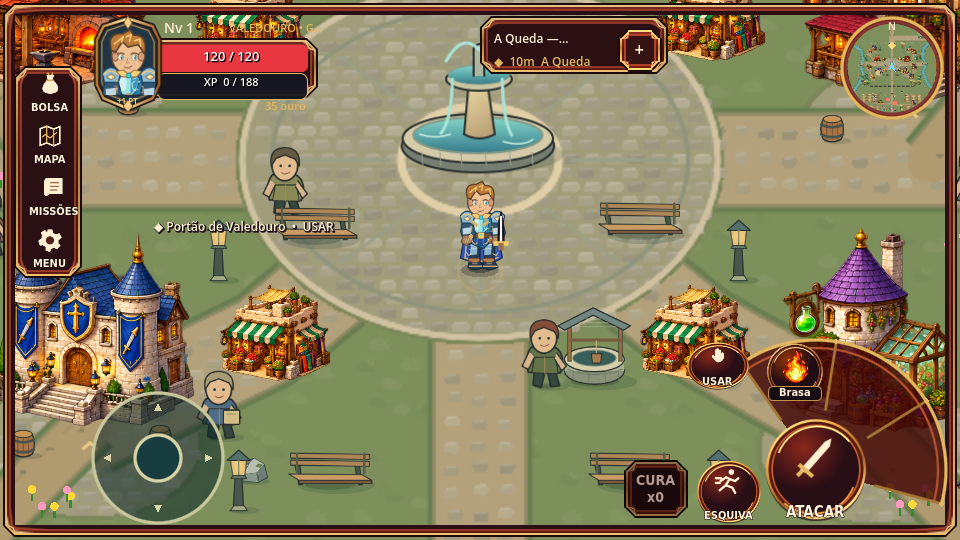
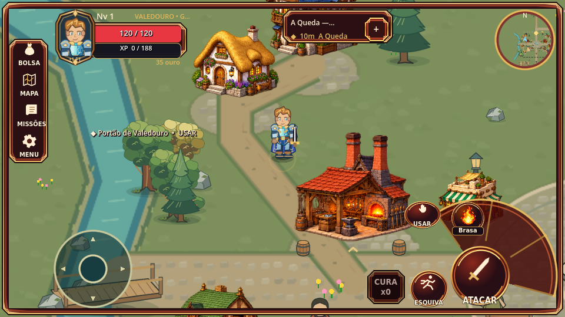
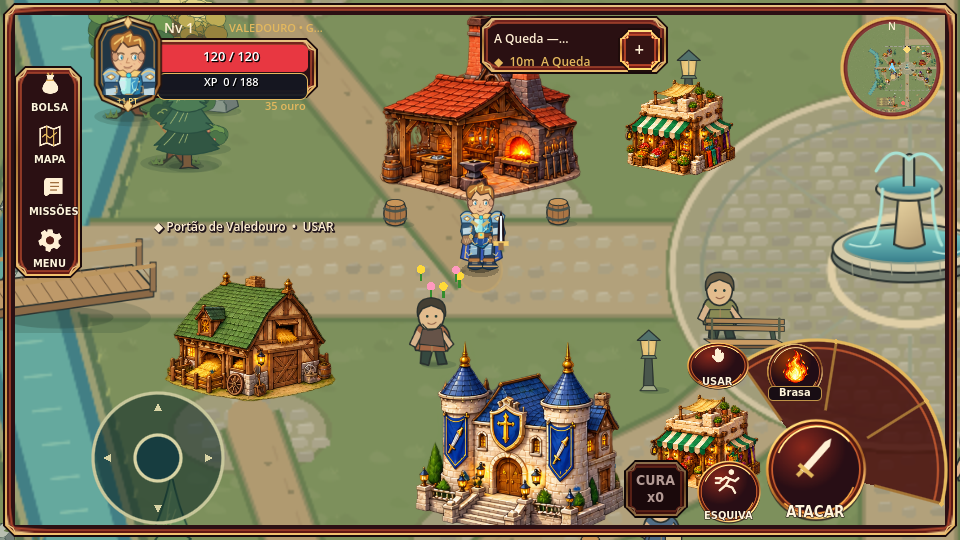
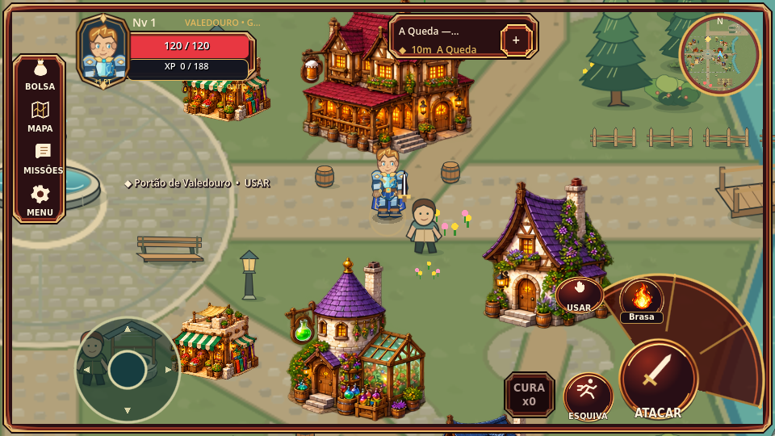
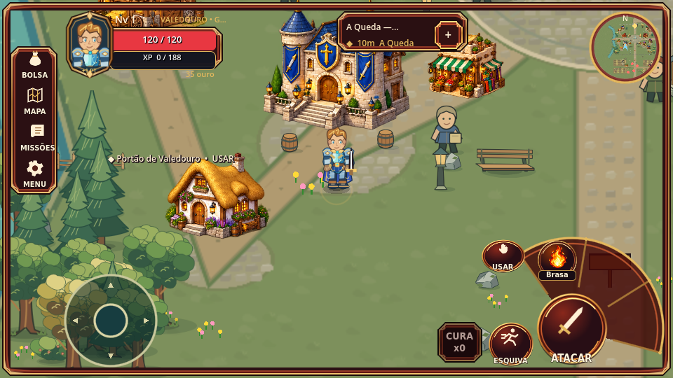
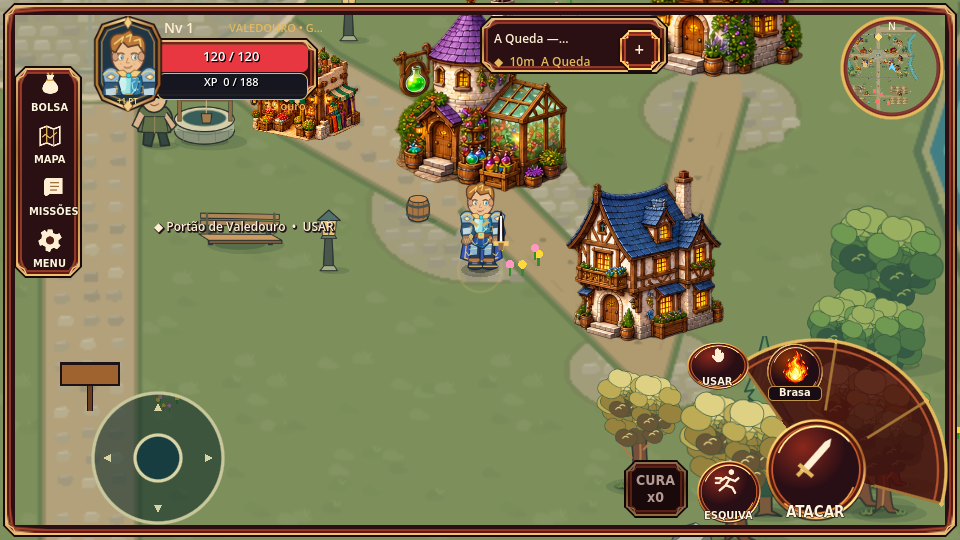
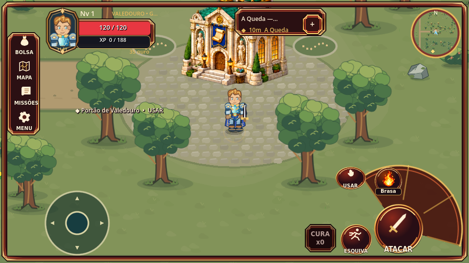
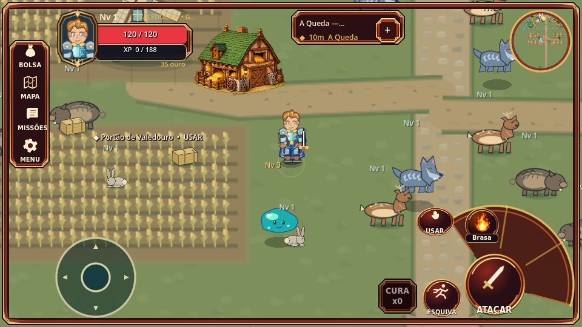
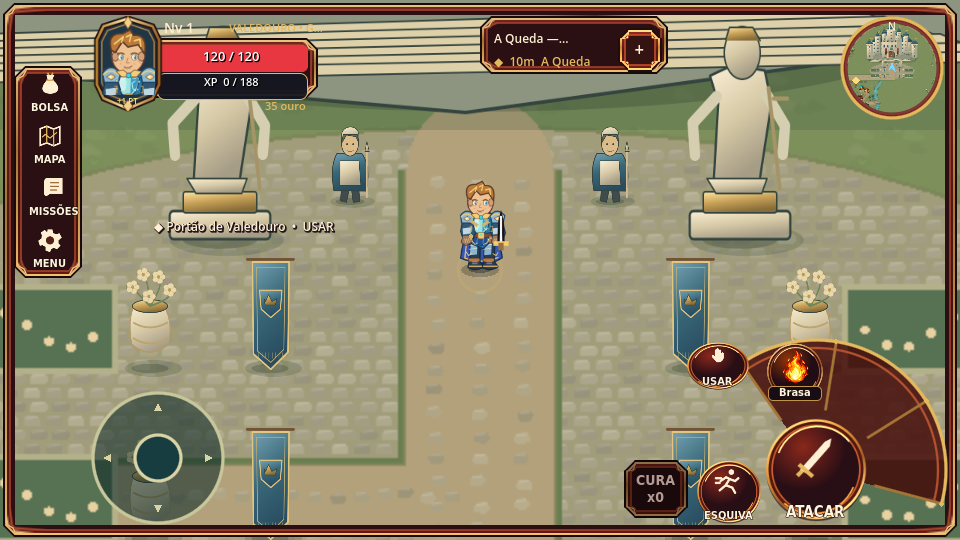
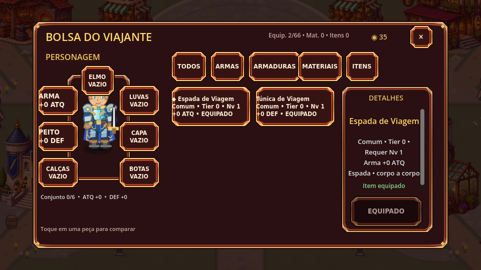
Nenhum APK gerado nesta atualização. Save v8.